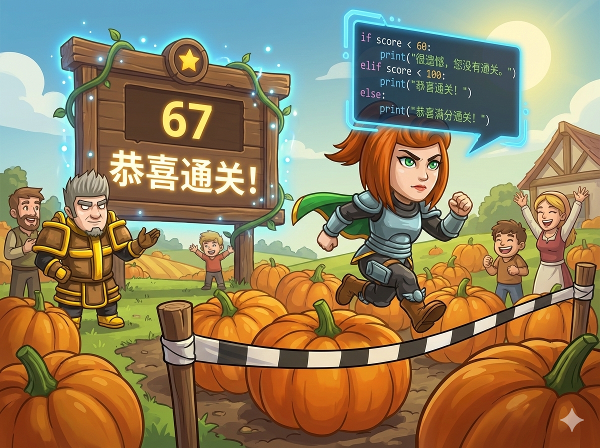

金灿灿的南瓜田里正在举办“南瓜向前冲”闯关游戏 🎃！ 安雅参加了比赛，大屏幕会根据她的分数给出评价：
👉 任务： 编写程序，读入分数，输出对应的那句话。
以前我们只有两个选择（是/否），现在有 三个选择。这时候就需要用到 多重分支 魔法！
大屏幕准备好了，快写代码来显示结果吧！
#include <iostream> using namespace std; int main() { // 1️⃣ 声明变量 a (分数) int a; // 2️⃣ 输入分数 cin >> a; // 3️⃣ 多重判断 (三岔路) if (a < 60) { // 情况1：不及格 cout << "很遗憾，您没有通关。"; } else if (a < 100) { // 情况2：及格但没满分 (隐含了 a >= 60) cout << "恭喜通关！"; } else { // 情况3：剩下的情况 (满分) cout << "恭喜满分通关！"; } return 0; }
# 1️⃣ 输入：读取分数，存入变量 a a = int(input()) # 2️⃣ 多重判断 if a < 60: # 情况1：不及格 print("很遗憾，您没有通关。") elif a < 100: # 情况2：及格但没满分 print("恭喜通关！") else: # 情况3：满分 print("恭喜满分通关！")
⭐ 逻辑小贴士： 判断顺序很重要！如果把 a < 100 写在最前面，那么 50 分也会被判断成“恭喜通关”，这就错啦！要从小到大（或从特殊到一般）排队判断。